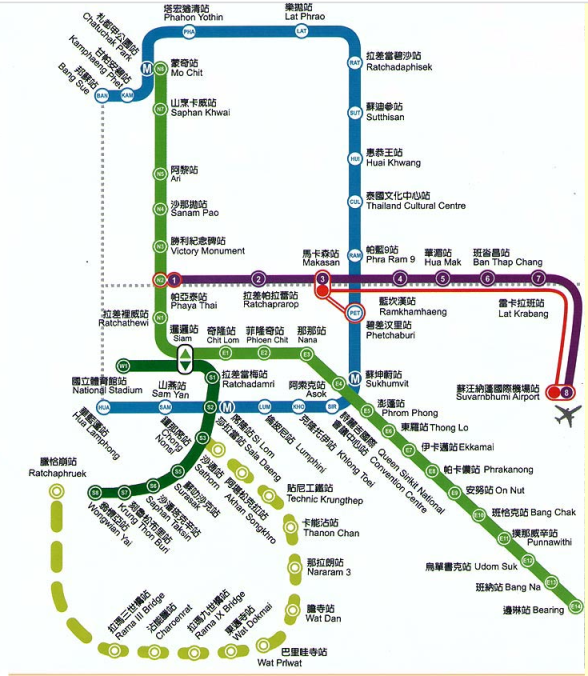
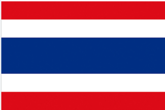
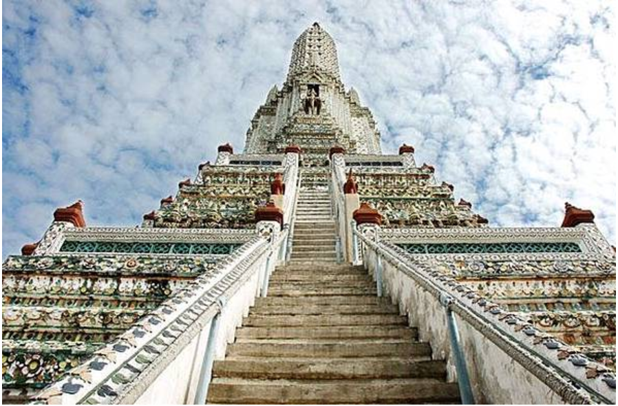
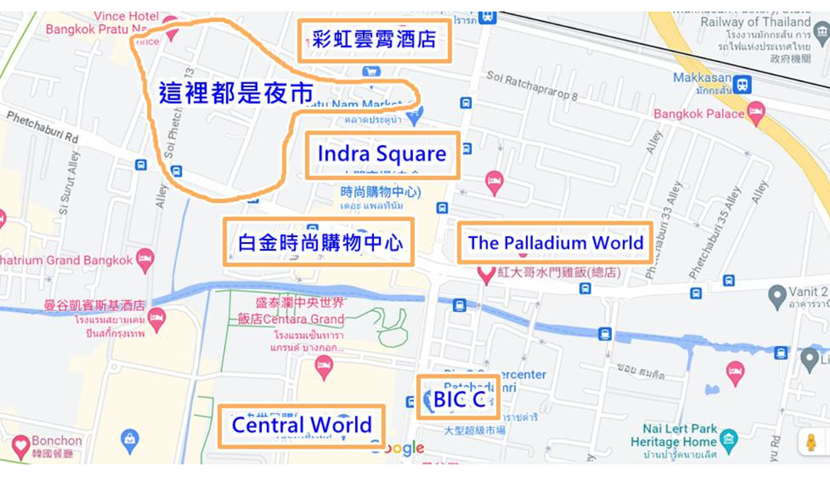

泰麻里五日遊 12/7 ~ 12/11

>>>>>>> 9587d52 (good)


DAY1 (12/7)
1. 17:35 到 BKK
2. 搭電梯到最下層，換錢、搭地鐵
3. 地鐵搭到底站 (PHAYA THAI) 約 26 分鐘，走路 6 分鐘到飯店 (True Siam Phayathai Hotel)
4. 吃晚餐，看成人秀、人妖秀
DAY2 (12/8)
1. 鄭王廟 (大概 2~3 小)
交通: BTS 從 Phaya Thai 到 Saphan Taksin，轉船到 N8
泰服: https://bkk.com.tw/wat-arun-thai-costume-for-rent/
2. 搭橫渡船到對面臥佛寺
3. 逛 Iconsiam (可安排午餐到晚餐)
4. 晚餐船
5. 回程: BTS 或船 + BTS 返回 Phaya Thai
DAY4 (12/10)
1. 四面佛
2. BigC、水門市場等商場

3. 逛到 4 點後可回飯店放東西，再去夜市或看秀
DAY5 (12/11)
18:35 飛機，建議提早 2~3 小時到機場，早上退房後可先去 Terminal 21。
交通: BTS 到 Asok；往機場從 T21 搭 MRT 到 Phetchaburi 轉機場捷運。